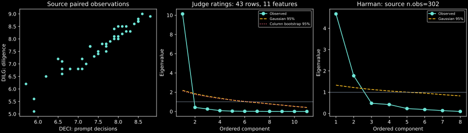

IIT Hyderabad · NPTEL · Independent study edition
Principal components: variance, geometry, and reconstruction
2.1 Compressing variation without selecting columns
Suppose several measurements of the same observational units move together. Storing every coordinate may be inexpensive, yet estimating a model or interpreting a plot in all coordinates can be difficult. Principal component analysis (PCA) replaces the original coordinates by linear combinations ordered by their observed variance. Keeping only a subset produces a low-dimensional representation. The objective is precise: preserve as much squared variation as possible in an orthogonal linear subspace.
PCA is feature extraction: the retained coordinates are usually combinations of many measured features. Feature selection instead retains a subset of the measured columns. PCA does not delete observations, and merely changing to all principal coordinates does not reduce dimension. Compression occurs when some of those coordinates are discarded. High dimension also does not imply that variables are highly correlated. When variation is spread across many directions, an accurate low-dimensional linear compression may not exist.
Let $n>1$ observations have $d$ real-valued feature coordinates. After subtracting each feature's sample mean, put the centered rows in $\mathbf{Z}\in\mathbb{R}^{n\times d}$. Its sample covariance matrix is
$$\mathbf{S}=\frac{\mathbf{Z}^{\mathsf T}\mathbf{Z}}{n-1}. \tag{2.1}$$The diagonal entry $S_{jj}$ is feature $j$'s sample variance; the off-diagonal entry $S_{j\ell}$ is the sample covariance between features $j$ and $\ell$. The matrix is symmetric because transposing $\mathbf{Z}^{\mathsf T}\mathbf{Z}$ leaves it unchanged. It is positive semidefinite: for every vector $\mathbf{a}\in\mathbb{R}^d$, $\mathbf{a}^{\mathsf T}\mathbf{S}\mathbf{a}=\|\mathbf{Z}\mathbf{a}\|^2/(n-1)\geq0$. This property concerns quadratic forms and eigenvalues; individual covariance entries can be negative.
The real symmetric spectral theorem supplies an orthonormal eigenbasis $\mathbf{v}_1,\ldots,\mathbf{v}_d$ with eigenvalues $\lambda_1\geq\cdots\geq\lambda_d\geq0$. Each vector satisfies $\mathbf{S}\mathbf{v}_j=\lambda_j\mathbf{v}_j$ and $\mathbf{v}_j^{\mathsf T}\mathbf{v}_\ell$ equals one for equal indices and zero otherwise. A direction $\mathbf{v}_j$ lives in feature space. The corresponding vector $\mathbf{t}_j=\mathbf{Z}\mathbf{v}_j$ contains one score for each observation and lives in observation space. Directions and scores have different dimensions and should not be described interchangeably.
Source discussion: the PCA objective, 4:47 and covariance-matrix properties, 2:25. The notation uses $n$ for observations and $d$ for features throughout these notes.
2.2 Why an eigenvector gives the largest variance
For a unit vector $\mathbf{v}\in\mathbb{R}^d$, the linear score vector $\mathbf{Z}\mathbf{v}$ has sample variance $\mathbf{v}^{\mathsf T}\mathbf{S}\mathbf{v}$. The unit-length constraint is essential. Without it, multiplying a direction by an arbitrarily large constant would make its score variance arbitrarily large without discovering any new structure.
Expand a unit vector in the eigenbasis as $\mathbf{v}=\sum_{j=1}^d a_j\mathbf{v}_j$, where $\sum_j a_j^2=1$. Then $\mathbf{v}^{\mathsf T}\mathbf{S}\mathbf{v}=\sum_j\lambda_j a_j^2\leq\lambda_1\sum_j a_j^2=\lambda_1$. Choosing $\mathbf{v}=\mathbf{v}_1$ attains the bound. Orthogonality to the first $j-1$ directions sets their coefficients to zero; the same argument on the remaining basis gives $\lambda_j$. ∎
The hinge is that a unit vector's squared eigenbasis coefficients form nonnegative weights summing to one. The variance is a weighted average of the eigenvalues; its maximum is the largest available eigenvalue. The result requires only the observed covariance geometry. No normal distribution or probabilistic independence assumption is needed for this sample calculation.
Let $\mathbf{V}$ contain all eigenvectors as columns and let $\mathbf{T}=\mathbf{Z}\mathbf{V}$ contain all score vectors. The covariance of these scores is
$$\frac{\mathbf{T}^{\mathsf T}\mathbf{T}}{n-1}=\mathbf{V}^{\mathsf T}\mathbf{S}\mathbf{V}=\operatorname{diag}(\lambda_1,\ldots,\lambda_d). \tag{2.2}$$Thus distinct score columns are uncorrelated and their variances are ordered. Uncorrelated scores need not be independent: the distinction from Chapter 1 remains. Orthogonal directions are deterministic geometric objects, while zero sample covariance is a relation between their projected observation columns.
The trace, defined as the sum of diagonal entries, gives $\operatorname{tr}(\mathbf{S})=\sum_j\lambda_j$. It is both the sum of original feature variances and the sum of all principal-score variances. An orthogonal change of coordinates preserves this total. Keeping the first $k$ coordinates preserves only $\sum_{j=1}^k\lambda_j$; discarded variance has not vanished from the original data.
A direction and its negative are equally valid. Reversing $\mathbf{v}_j$ reverses the associated scores without changing variance or reconstruction. If an eigenvalue is repeated, any orthonormal basis within its eigenspace is valid. Numerical comparisons should therefore compare projection matrices or reconstructed data when a basis is not uniquely identified. An apparent sign disagreement between two implementations is not automatically a computational error.
Source derivation: orthogonal transformation and variance preservation, 11:04. Proposition 2.1 supplies the maximum-variance argument explicitly.
2.3 The same solution minimizes reconstruction error
Let $k\leq d$ be a retained dimension, and let $\mathbf{V}_k$ contain the first $k$ eigenvectors. The retained scores are $\mathbf{T}_k=\mathbf{Z}\mathbf{V}_k$. Multiplying them back by $\mathbf{V}_k^{\mathsf T}$ reconstructs a centered data matrix $\widehat{\mathbf{Z}}=\mathbf{Z}\mathbf{V}_k\mathbf{V}_k^{\mathsf T}$. The matrix $\mathbf{P}_k=\mathbf{V}_k\mathbf{V}_k^{\mathsf T}$ projects each observation orthogonally onto the retained subspace.
For any matrix $\mathbf{W}\in\mathbb{R}^{d\times k}$ with orthonormal columns, orthogonal decomposition gives error $\|\mathbf{Z}\|_F^2-\|\mathbf{Z}\mathbf{W}\|_F^2$. Dividing the retained term by $n-1$ gives $\operatorname{tr}(\mathbf{W}^{\mathsf T}\mathbf{S}\mathbf{W})=\sum_j\lambda_j a_j$, where $a_j=\|\mathbf{W}^{\mathsf T}\mathbf{v}_j\|^2$. Projection geometry gives $0\leq a_j\leq1$ and $\sum_j a_j=k$. Moving weight from a smaller eigenvalue to a larger available one cannot decrease this sum, so its maximum is $\sum_{j=1}^k\lambda_j$. The eigenvector projection attains that value. Subtracting from total squared variation $(n-1)\sum_j\lambda_j$ proves (2.3). ∎
The laboratory checks this identity on the source judge ratings. It obtains reconstruction error $36.39646810$ both by reconstructing the standardized observations and by summing the discarded eigenvalues and multiplying by $n-1$. Agreement checks the complete sequence of centering, scaling, eigenvectors, score normalization, and reconstruction.
The explained-variance fraction of the first $k$ components is $\sum_{j=1}^k\lambda_j/\sum_{j=1}^d\lambda_j$, provided total variance is positive. A cumulative-variance threshold chooses the smallest $k$ reaching a designated fraction. A scree plot instead displays the ordered eigenvalues to look for a change in slope. Neither procedure proves that the discarded coordinates are irrelevant to a downstream response.
For a counterexample, consider centered independent features with covariance $\operatorname{diag}(100,1)$ and let the response be exactly the second feature. The leading PCA direction retains the first feature and most feature variance, but discards the entire response signal. PCA optimizes reconstruction of the features; supervised feature reduction needs an objective involving the response. If PCA becomes part of a prediction pipeline, its means, scales, and directions must be fitted within each training fold.
Source discussion: choosing the retained dimension, 3:22. The reconstruction proof and prediction counterexample are authored extensions that delimit the source motivation.
2.4 Scaling, loadings, and scores are separate choices
Centering subtracts each column's mean. Standardizing additionally divides each centered column by its sample standard deviation. If $\mathbf{D}$ is the diagonal matrix of positive sample standard deviations, the standardized matrix is $\mathbf{Z}_s=\mathbf{Z}\mathbf{D}^{-1}$ and its covariance is the correlation matrix $\mathbf{R}=\mathbf{D}^{-1}\mathbf{S}\mathbf{D}^{-1}$. Zero-variance columns must be removed or handled separately because their scaling is undefined.
Covariance PCA measures squared reconstruction error in the original numerical units. Correlation PCA measures it after each variable has unit sample variance. Standardization is appropriate when relative variation should receive comparable weight, but it is a modeling decision. It can amplify a low-variance noisy feature. A covariance eigenvalue threshold of one has no unit-invariant meaning. For a correlation matrix the mean eigenvalue is one because the trace is $d$; retaining eigenvalues exceeding one is then a heuristic comparison with the average standardized-variable variance, not a theorem identifying a true dimension.
Software also uses the word loading for different quantities. For correlation PCA, let $\mathbf{v}_j$ be a unit eigenvector and let $\lambda_j>0$. The ordinary score column $\mathbf{t}_j=\mathbf{Z}_s\mathbf{v}_j$ has variance $\lambda_j$. Its correlation with feature $\ell$ is $\sqrt{\lambda_j}v_{\ell j}$. Define the loading matrix $\mathbf{L}=\mathbf{V}_k\operatorname{diag}(\sqrt{\lambda_1},\ldots,\sqrt{\lambda_k})$. Its entries are these feature–component correlations.
The standardized score columns are $\mathbf{F}=\mathbf{T}_k\operatorname{diag}(\lambda_1^{-1/2},\ldots,\lambda_k^{-1/2})$. Their sample covariance is the identity. When $\mathbf{R}$ is invertible, the coefficient matrix producing these standardized scores is $\mathbf{B}=\mathbf{R}^{-1}\mathbf{L}$, which equals $\mathbf{V}_k\operatorname{diag}(\lambda_j^{-1/2})$. Thus eigenvectors, loading correlations, and standardized-score weights are three different matrices. Multiplying standardized observations directly by the loading matrix does not give the standardized scores.
For an orthogonal rotation $\mathbf{Q}\in\mathbb{R}^{k\times k}$, rotated loadings $\mathbf{L}\mathbf{Q}$ preserve $\mathbf{L}\mathbf{L}^{\mathsf T}$. The standardized scores rotate correspondingly to $\mathbf{F}\mathbf{Q}$, and retain identity covariance. Rotating ordinary scores whose variances differ generally introduces off-diagonal covariance instead. A rotated component representation need not retain the ordered maximum-variance characterization of principal axes. Rotation is useful for interpretation, but should not be presented as another set of unrotated principal axes.
The source's psych::principal output uses loading correlations and standardized regression-score weights. Its h2 value is the sum of squared retained loadings for a variable; with one component it is the squared loading, rather than the correlation itself. By contrast, stats::prcomp returns unit direction coefficients and ordinary component scores. Its default centers without standardizing. The Python conversion makes each convention explicit instead of comparing different output columns as if they were the same object.
Conventions verified in the primary software documentation: psych principal and R prcomp. Source demonstration: loadings and communalities, 23:44.
2.5 Reproducing the source demonstrations in Python
The canonical USJudgeRatings dataset contains observations for 43 judges and 12 numerical columns. The first numerical column, CONT, records lawyer–judge contacts. Judge names are row labels. Consequently, the source expression USJudgeRatings[,-1] removes CONT and leaves 11 rating columns; it does not remove a names column. The Python conversion reproduces that actual expression with a named column exclusion and retains all 12 columns in the bundled canonical data.
The source covariance, correlation, and scatterplot compare DECI and DILG. Python reproduces their correlation as $0.95616608$. The 11-rating correlation matrix has leading eigenvalue $10.133417$, explaining fraction $0.92121977$ of its total standardized variance. The first integrity loading is $0.918422$, its communality is $0.843499$, and its standardized-score weight is $0.090633$. Their numerical differences illustrate why a printed loading is not a coefficient to substitute directly into the standardized-score calculation. Figure 2.1 connects the paired observations to the two multivariate eigenvalue comparisons.

psych::fa.parallel(...,fa="pc",n.iter=100) compares observed PCA eigenvalues with random-data eigenvalues. The converted implementation runs 100 Gaussian-null matrices with the same numbers of rows and columns. When raw data exist, it also resamples each column independently with replacement, preserving marginal empirical distributions while removing systematic cross-column pairing. It reports the componentwise 95th percentiles. The random-number stream is explicitly seeded in Python and is not R's stream, so a finite simulated curve need not match the recording point for point. The observed eigenvalues and the underlying null procedures can still be compared directly.
The Harman23.cor dataset contains an eight-variable correlation matrix rather than individual measurements. Its leading eigenvalues are $4.672880$ and $1.770983$. Dividing by the full trace of eight gives variance fractions $0.584110$ and $0.221373$, totaling $0.80548281$. Dividing those two eigenvalues by their retained sum instead gives approximately $0.725167$ and $0.274833$. Those latter fractions sum to one because their denominator excludes discarded components. They do not mean that two components recover all original variance.
Selected source-code frames show n.obs=302 in the Harman parallel-analysis call, while the canonical dataset documents 305 observations. The laboratory executes the source setting and the documented setting separately. This affects the random-null comparison, not the eigendecomposition of the supplied matrix. Its two-component extraction and Kaiser-normalized varimax rotation reproduce the source methods, while recording explicit normalization and convergence tolerance. The reconstructed matrix and variable communalities remain unchanged under the orthogonal rotation.
Scores require additional care. The source's judge-score extraction can be converted because the 43 rows are available; the first six Python standardized scores agree with the displayed source values to their printed precision. The source's Harman score-weight matrix can also be computed from its correlation matrix. Individual Harman observation scores cannot be recovered: many different individual-data matrices have the same covariance. The missing object is the original observation matrix, not an unavailable Python algorithm. The laboratory supplies weights and states that boundary rather than inventing 305 rows.
The final prcomp example uses the unstandardized DECI,DILG pair in that order. NumPy's centered singular value decomposition reproduces its eigenvalues $1.424834$ and $0.031489$, whose variance fractions are $0.978377$ and $0.021623$. Scores may differ by an entire-column sign convention, which does not change the fit. All displayed numeric results are generated by the Python laboratory; its data and provenance are included for offline use.
Source examples: judge covariance, correlation, and plot, 15:07; judge parallel analysis and principal extraction, 17:44; Harman example, 25:34; scores, 31:33; prcomp, 32:40. The conversion follows the primary parallel-analysis implementation for the null constructions, without claiming identical Monte Carlo draws.
2.6 Exercises with worked solutions
Rotation or compression? Explain why keeping every principal score does not reduce dimension or lose variation. What changes when only the first $k<d$ scores are retained?
Worked solution
The full eigenvector matrix is orthogonal and invertible, so $\mathbf{Z}=\mathbf{T}\mathbf{V}^{\mathsf T}$. It is a coordinate change. Truncation uses a rank-$k$ projection, so scores in omitted directions cannot generally be reconstructed. Equation (2.3) measures the lost squared variation. If all omitted eigenvalues vanish, the original observations already lie in the retained subspace and the reconstruction remains exact.
Variance and prediction. Explain why keeping most input variance is insufficient to guarantee good prediction of a response. Give an explicit two-feature construction.
Worked solution
Take independent centered features of variances $100$ and $1$, and let the response equal the second feature. The leading PCA direction retains the first coordinate because it maximizes feature variance. Independence means that coordinate provides no information about the response; the omitted coordinate would predict it exactly. A predictor needs a response-sensitive criterion or validation of the entire PCA-plus-model procedure. No variance fraction alone supplies that guarantee.
Loading versus score coefficient. For an eigenpair $(\lambda,\mathbf{v})$ of a correlation matrix with $\lambda>0$, derive the feature correlations of the ordinary score and the coefficients for a unit-variance score.
Worked solution
The ordinary score is $\mathbf{t}=\mathbf{Z}_s\mathbf{v}$, whose variance is $\lambda$. Feature $\ell$ has covariance $(\mathbf{R}\mathbf{v})_\ell=\lambda v_\ell$ with it, so their correlation is $\sqrt{\lambda}v_\ell$. Dividing the score by $\sqrt{\lambda}$ gives coefficients $\mathbf{v}/\sqrt{\lambda}$. These differ from loading correlations $\sqrt{\lambda}\mathbf{v}$ by a factor of $\lambda$. The covariance identity follows directly from $\mathbf{R}\mathbf{v}=\lambda\mathbf{v}$.
A misleading percentage. The first two Harman eigenvalues sum to $6.443862$ to displayed precision. Explain why percentages normalized within that pair add to one, while the fraction of all standardized variance is smaller. Reproduce both calculations in Python.
Worked solution
The within-pair denominator is the same retained sum, so dividing each member by it necessarily gives fractions summing to one. The full covariance trace is eight; dividing the retained sum by eight gives approximately $0.80548281$. The laboratory uses unrounded eigenvalues. It prints within-pair fractions approximately $0.725167$ and $0.274833$, and original-variance fractions approximately $0.584110$ and $0.221373$. The remaining eigenvalues account for the omitted variation.
Verify a complete reconstruction. For the standardized 11-rating data, compute the rank-one reconstruction in two ways: ordinary scores times unit directions, and standardized scores times loading correlations. Compare its squared error with the discarded-eigenvalue formula.
Worked solution
The ordinary representation is $(\mathbf{Z}_s\mathbf{v}_1)\mathbf{v}_1^{\mathsf T}$. The standardized representation is $(\mathbf{Z}_s\mathbf{v}_1/\sqrt{\lambda_1})(\sqrt{\lambda_1}\mathbf{v}_1)^{\mathsf T}$, which is identical because the scale factors cancel. The laboratory forms the latter through the correlation-system weights, checks its identity with the former, and obtains error $36.39646810$. The formula $(43-1)\sum_{j>1}\lambda_j$ gives the same result. Comparing score columns without accounting for normalization would fail this check.
What covariance cannot recover. Explain why the Harman correlation matrix is enough to calculate loading and score-weight matrices, but insufficient to list the score of each participant. Does replacing the sample size by 302 rather than 305 fix this?
Worked solution
The loading matrix depends on the correlation eigensystem, and regression-score weights solve a linear system involving that matrix. Individual scores multiply the unknown standardized observation rows by those weights. Covariance records pairwise second moments, not those rows. Different centered observation matrices can share the same Gram matrix and therefore the same correlation while giving different row-level scores. Changing the observation count only changes an assumed size; it does not recover the missing observations. It also changes the parallel-analysis null distribution and must not be used to conceal the documented sample-size discrepancy.
Python laboratory
Run labs/ch02.py from the course folder.
Data and figure paths, when used, are resolved by the program. Dependencies are listed in
requirements.txt.
Complete runnable Python source
"""PCA and explicit Python conversions of the source R demonstrations."""
from pathlib import Path
import numpy as np
import pandas as pd
DATA = Path(__file__).resolve().parent / "data"
def varimax(loadings, normalize=True, tolerance=1e-5, max_iter=1000):
"""Varimax with Kaiser normalization and polar updates."""
original = np.asarray(loadings, dtype=float)
norms = (
np.linalg.norm(original, axis=1)
if normalize
else np.ones(len(original))
)
norms = np.where(norms == 0, 1, norms)
normalized = original / norms[:, None]
rotation = np.eye(normalized.shape[1])
previous = 0.0
for _ in range(max_iter):
trial = normalized @ rotation
target = trial**3 - trial @ np.diag(np.sum(trial**2, axis=0)) / len(
trial
)
left, singular, right = np.linalg.svd(normalized.T @ target)
rotation = left @ right
objective = singular.sum()
if previous and objective <= previous * (1 + tolerance):
break
previous = objective
return original @ rotation, rotation
def principal(correlation, count, rotation="none"):
"""Correlation-PCA loadings and psych-style standardized-score weights."""
matrix = np.asarray(correlation, dtype=float)
values, vectors = np.linalg.eigh(matrix)
values, vectors = values[::-1], vectors[:, ::-1]
loadings = vectors[:, :count] * np.sqrt(np.maximum(values[:count], 0))
if rotation == "varimax":
loadings, _ = varimax(loadings)
for column in range(count):
if loadings[:, column].sum() < 0:
loadings[:, column] *= -1
order = np.argsort(np.sum(loadings**2, axis=0))[::-1]
loadings = loadings[:, order]
weights = np.linalg.solve(matrix, loadings)
return values, loadings, weights
def parallel_pca(
correlation, observations, raw=None, iterations=100, seed=2026
):
"""PCA parallel analysis: Gaussian null and optional column bootstrapping.
This converts the documented psych::fa.parallel(fa='pc') mechanism.
RNG streams differ from R; Monte Carlo curves are not bitwise copies.
"""
rng = np.random.default_rng(seed)
dimension = len(correlation)
simulated = np.empty((iterations, dimension))
resampled = np.empty_like(simulated) if raw is not None else None
for iteration in range(iterations):
null = rng.normal(size=(observations, dimension))
simulated[iteration] = np.linalg.eigvalsh(
np.corrcoef(null, rowvar=False)
)[::-1]
if raw is not None:
draws = np.column_stack(
[
rng.choice(raw[:, j], observations, replace=True)
for j in range(dimension)
]
)
resampled[iteration] = np.linalg.eigvalsh(
np.corrcoef(draws, rowvar=False)
)[::-1]
actual = np.linalg.eigvalsh(correlation)[::-1]
cutoff = np.quantile(simulated, 0.95, axis=0)
return actual, cutoff, resampled
def plot_source_examples(judges, values, cutoff, bootstrap, harman, h_cutoff):
"""Render the source scatter and scree diagrams."""
import matplotlib
matplotlib.use("Agg")
import matplotlib.pyplot as plt
plt.style.use("dark_background")
figure, axes = plt.subplots(
1, 3, figsize=(13, 3.7), constrained_layout=True
)
axes[0].scatter(judges["DECI"], judges["DILG"], s=18, color="#6ee7d8")
axes[0].set(
xlabel="DECI: prompt decisions",
ylabel="DILG: diligence",
title="Source paired observations",
)
for ax, observed, threshold in [
(axes[1], values, cutoff),
(axes[2], harman, h_cutoff),
]:
positions = np.arange(1, len(observed) + 1)
ax.plot(positions, observed, "o-", color="#6ee7d8", label="Observed")
ax.plot(
positions, threshold, "--", color="#fbbf24", label="Gaussian 95%"
)
ax.axhline(1, color="#94a3b8", linewidth=0.7)
ax.set(xlabel="Ordered component", ylabel="Eigenvalue")
ax.legend(fontsize=7)
axes[1].plot(
np.arange(1, len(values) + 1),
np.quantile(bootstrap, 0.95, axis=0),
":",
color="#fb7185",
label="Column bootstrap 95%",
)
axes[1].legend(fontsize=7)
axes[1].set_title("Judge ratings: 43 rows, 11 features")
axes[2].set_title("Harman: source n.obs=302")
destination = DATA.parents[1] / "assets" / "ch02-source-plots.svg"
figure.savefig(destination, metadata={"Date": None})
figure.savefig(
DATA.parents[1] / "validation" / "chapters" / "ch02-figure.png",
dpi=120,
)
plt.close(figure)
def main():
np.set_printoptions(precision=6, suppress=True)
judges = pd.read_csv(DATA / "ch02-USJudgeRatings.csv", index_col=0)
ratings = judges.drop(columns="CONT")
raw = ratings.to_numpy()
centered = raw - raw.mean(axis=0)
standardized = centered / raw.std(axis=0, ddof=1)
correlation = np.corrcoef(raw, rowvar=False)
values, loadings, weights = principal(correlation, 1)
scores = standardized @ weights
raw_scores = standardized @ (loadings / np.sqrt(values[0]))
assert np.allclose(np.cov(scores, rowvar=False), 1)
assert np.allclose(raw_scores / np.sqrt(values[0]), scores)
assert np.allclose(correlation @ weights, loadings)
assert np.allclose(loadings[:, 0] ** 2, np.sum(loadings**2, axis=1))
print("USJudgeRatings canonical shape:", judges.shape)
print("Source rating-only PCA omits numeric CONT, leaving:", ratings.shape)
print("DECI/DILG covariance (n-1), matching source column order:")
print(judges[["DECI", "DILG"]].cov().to_numpy())
print("DILG/DECI correlation:", judges[["DILG", "DECI"]].corr().iloc[0, 1])
print("Rating correlation eigenvalues:", values)
print(
f"First-component fraction of rating variance: {values[0] / 11:.8f}"
)
print("Feature, loading, communality, uniqueness, score weight:")
for name, loading, weight in zip(
ratings.columns, loadings[:, 0], weights[:, 0]
):
print(
f"{name:4s} {loading:.6f} {loading**2:.6f} "
f"{1 - loading**2:.6f} {weight:.6f}"
)
print("First six psych-style standardized scores:", scores[:6, 0])
actual, cutoff, boot = parallel_pca(correlation, len(raw), raw)
print("Parallel PCA Gaussian 95% null eigenvalues (100 draws):", cutoff)
print(
"Parallel PCA bootstrap 95% null eigenvalues:",
np.quantile(boot, 0.95, axis=0),
)
print("Count above Gaussian null:", int(np.sum(actual > cutoff)))
two = judges[["DECI", "DILG"]].to_numpy()
two -= two.mean(axis=0)
_, singular, right = np.linalg.svd(two, full_matrices=False)
two_values = singular**2 / (len(two) - 1)
print("Unscaled prcomp DILG/DECI eigenvalues:", two_values)
print(
"Unscaled prcomp explained proportions:", two_values / two_values.sum()
)
print("Unscaled prcomp first five score rows (signs arbitrary):")
print((two @ right.T)[:5])
for component in range(2):
print(
f"Unscaled prcomp score variance {component + 1}: "
f"{np.var(two @ right[component], ddof=1):.6f}"
)
harman = pd.read_csv(DATA / "ch02-Harman23-correlation.csv", index_col=0)
h_values, h_loadings, _ = principal(harman, 2)
_, h_rotated, h_weights = principal(harman, 2, rotation="varimax")
assert np.allclose(h_loadings @ h_loadings.T, h_rotated @ h_rotated.T)
retained = np.sum(h_loadings**2, axis=0)
print("Harman23 correlation eigenvalues:", h_values)
print("Harman proportions of all original variance:", retained / 8)
print(
"Harman proportions within retained variance:",
retained / retained.sum(),
)
print(
f"Harman retained fraction of original variance: {
retained.sum() / 8:.8f}"
)
print("Harman unrotated loadings:")
print(h_loadings)
print("Harman Kaiser-normalized varimax loadings:")
print(h_rotated)
print("Harman rotated standardized-score weights, rounded as source:")
print(np.round(h_weights, 2))
_, source_h_cutoff, _ = parallel_pca(harman, 302)
print(
"Harman Gaussian parallel cutoff, source n.obs=302:", source_h_cutoff
)
_, h_cutoff, _ = parallel_pca(harman, 305)
print("Harman Gaussian parallel cutoff, n.obs=305:", h_cutoff)
_, h_cutoff_100, _ = parallel_pca(harman, 100)
print(
"Sensitivity if matrix n.obs omitted and default100 used:",
h_cutoff_100,
)
reconstructed = standardized @ weights @ loadings.T
error = np.sum((standardized - reconstructed) ** 2)
expected = (len(raw) - 1) * values[1:].sum()
assert np.allclose(error, expected)
print(f"Rating rank-one reconstruction SSE: {error:.8f}")
print(f"Discarded-eigenvalue SSE: {expected:.8f}")
print(
"Harman scores unavailable: individual rows not supplied."
)
plot_source_examples(
judges, values, cutoff, boot, h_values, source_h_cutoff
)
print(
"Checks passed: eigensystem, scores, rotation, reconstruction."
)
if __name__ == "__main__":
main()
Recorded execution output
USJudgeRatings canonical shape: (43, 12)
Source rating-only PCA omits numeric CONT, leaving: (43, 11)
DECI/DILG covariance (n-1), matching source column order:
[[0.644707 0.691656]
[0.691656 0.811617]]
DILG/DECI correlation: 0.9561660826098957
Rating correlation eigenvalues: [10.133417 0.424629 0.25528 0.091303 0.0373 0.019761 0.018474
0.008291 0.006092 0.003361 0.002091]
First-component fraction of rating variance: 0.92121977
Feature, loading, communality, uniqueness, score weight:
INTG 0.918422 0.843499 0.156501 0.090633
DMNR 0.913097 0.833746 0.166254 0.090108
DILG 0.968877 0.938724 0.061276 0.095612
CFMG 0.963329 0.928003 0.071997 0.095065
DECI 0.961114 0.923740 0.076260 0.094846
PREP 0.984960 0.970146 0.029854 0.097199
FAMI 0.976243 0.953050 0.046950 0.096339
ORAL 0.995447 0.990914 0.009086 0.098234
WRIT 0.990173 0.980442 0.019558 0.097714
PHYS 0.893695 0.798692 0.201308 0.088193
RTEN 0.986135 0.972463 0.027537 0.097315
First six psych-style standardized scores: [-0.185798 0.746987 0.070477 1.135876 -2.158621 0.766941]
Parallel PCA Gaussian 95% null eigenvalues (100 draws): [2.194722 1.843411 1.589245 1.386531 1.178229 1.027872 0.912373 0.794127
0.659961 0.530525 0.417107]
Parallel PCA bootstrap 95% null eigenvalues: [2.143675 1.770017 1.534627 1.333454 1.189631 1.053292 0.930718 0.76929
0.669816 0.5357 0.424812]
Count above Gaussian null: 1
Unscaled prcomp DILG/DECI eigenvalues: [1.424834 0.031489]
Unscaled prcomp explained proportions: [0.978377 0.021623]
Unscaled prcomp first five score rows (signs arbitrary):
[[-0.403623 0.137183]
[ 0.958674 -0.135118]
[ 0.103189 -0.044867]
[ 1.448514 -0.034835]
[-1.798317 -0.230008]]
Unscaled prcomp score variance 1: 1.424834
Unscaled prcomp score variance 2: 0.031489
Harman23 correlation eigenvalues: [4.67288 1.770983 0.481035 0.421441 0.233221 0.186674 0.137304 0.096463]
Harman proportions of all original variance: [0.58411 0.221373]
Harman proportions within retained variance: [0.725167 0.274833]
Harman retained fraction of original variance: 0.80548281
Harman unrotated loadings:
[[ 0.859437 -0.372274]
[ 0.841587 -0.441048]
[ 0.813139 -0.458594]
[ 0.839576 -0.395331]
[ 0.758031 0.524651]
[ 0.674246 0.533269]
[ 0.617219 0.580113]
[ 0.670609 0.418463]]
Harman Kaiser-normalized varimax loadings:
[[0.902064 0.251994]
[0.931504 0.187327]
[0.920454 0.155784]
[0.901155 0.221576]
[0.258492 0.884902]
[0.187978 0.838837]
[0.114179 0.839318]
[0.257446 0.747361]]
Harman rotated standardized-score weights, rounded as source:
[[ 0.28 -0.05]
[ 0.3 -0.08]
[ 0.3 -0.09]
[ 0.28 -0.06]
[-0.06 0.33]
[-0.08 0.32]
[-0.1 0.34]
[-0.04 0.27]]
Harman Gaussian parallel cutoff, source n.obs=302: [1.33107 1.219918 1.128342 1.058378 1.000767 0.954871 0.88662 0.826988]
Harman Gaussian parallel cutoff, n.obs=305: [1.324412 1.221695 1.127221 1.056676 1.007319 0.954367 0.882018 0.819891]
Sensitivity if matrix n.obs omitted and default100 used: [1.547339 1.377088 1.231479 1.099663 0.993059 0.904176 0.803637 0.712822]
Rating rank-one reconstruction SSE: 36.39646810
Discarded-eigenvalue SSE: 36.39646810
Harman scores unavailable: individual rows not supplied.
Checks passed: eigensystem, scores, rotation, reconstruction.